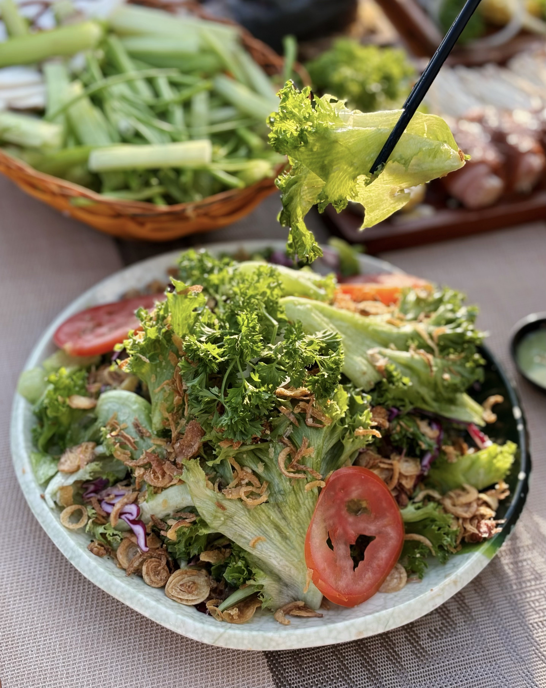

Mực nướng — Món BBQ hải sản hot nhất
Mực nướng là món "phải gọi" tại mọi quán BBQ ở Đà Lạt. Mực ống tươi nướng sa tế cay nhẹ, mực trứng nướng muối ớt béo bùi — mỗi loại một vẻ, đều ngon tuyệt. Ăn nóng ngay trên bếp, chấm muối tiêu chanh — đơn giản mà gây nghiện!
1. Trạm Dừng Chill — Mực tươi nướng than hoa
Trạm Dừng Chill nhập mực ống tươi hàng ngày từ biển. Mực nướng trên than hoa, thịt giòn dai, không khô. Có nhiều cách chế biến: nướng sa tế, nướng muối ớt, nướng bơ tỏi. Giá mực nướng từ 80K/phần.

2. Hải Sản Nướng Phan Thiết
Quán chuyên hải sản, mực tươi sống bày bể. Khách chọn mực rồi quán nướng tại chỗ. Giá theo ký, khoảng 200-300K/kg mực ống.
3-4. Quán Ốc Đà Lạt và Bếp Hải Sản
Hai quán hải sản bình dân, có mực nướng trong menu. Giá rẻ hơn, khoảng 60-100K/phần. Chất lượng ổn, phù hợp ăn nhẹ.
5. Seafood BBQ Premium
Quán cao cấp chuyên hải sản nướng, mực Phú Quốc size lớn. Nướng kiểu Nhật trên bếp binchotan. Giá từ 150K/phần — đáng thử!
Kết luận
Mực nướng Đà Lạt tươi ngon bất ngờ! Đến Trạm Dừng Chill thưởng thức mực nướng than hoa + view đẹp. Đặt bàn ngay!